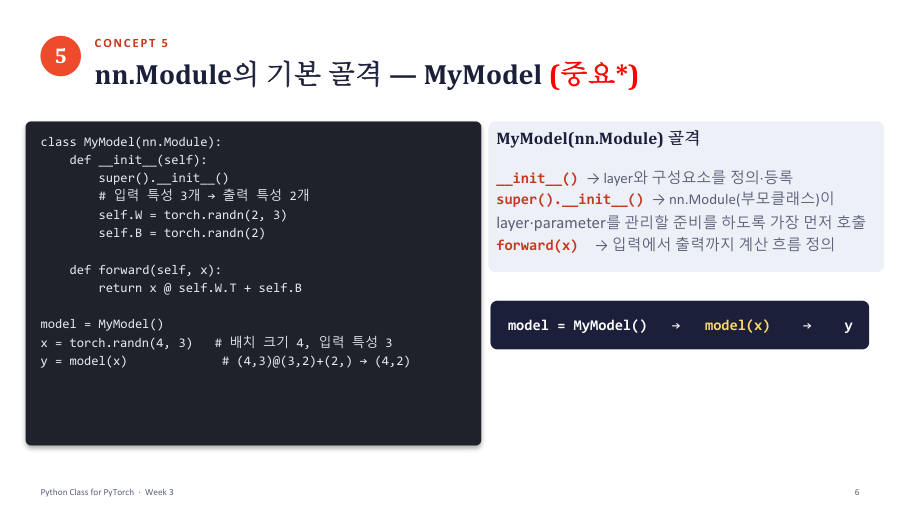

nn.Module로 모델 만들기 — 골격과 nn.Linear ★★★ 시험 3번
드디어 모델이에요. PyTorch는 모델을 만들 때 쓰라고 nn.Module이라는 부모 클래스를 미리 만들어 뒀어요. 우리는 이것을 상속해서 내 모델(자식)을 만들어요. 교수님은 이 구조를 "거의 외우다시피 알고 있으라"고 했어요.

| 코드 줄 | 무슨 뜻 |
|---|---|
class MyModel(nn.Module): | MyModel은 nn.Module(부모)을 상속한 자식 클래스예요 |
super().__init__() | 가장 먼저 부모 nn.Module의 __init__을 실행해요. 부모가 layer와 parameter를 관리할 준비를 해요. 4-6에서 배운 그 규칙이에요 |
self.fc = nn.Linear(3, 2) | 입력 특성 3개를 출력 특성 2개로 바꾸는 층을 만들어 self.fc에 저장(등록)해요 |
def forward(self, x): | 입력에서 출력까지의 계산 흐름을 적는 곳이에요 |
return self.fc(x) | 저장해 둔 층에 x를 통과시켜 결과를 돌려줘요. self.fc(x)처럼 괄호로 호출해야 계산돼요 |
y = model(x) | (4, 3) 입력 → (4, 2) 출력 |
model.fc.weight.shape | weight는 (2, 3). 출력 2개 × 입력 3개 |
model.fc.bias.shape | bias는 (2,). 출력 개수만큼 |
nn.Linear(입력 특성 수, 출력 특성 수)는 입력의 마지막 차원만 바꾸고 맨 앞(batch)은 그대로 둬요. 입력 (N, 3) → 출력 (N, 2)예요. 파라미터 수는 weight 2×3 = 6개와 bias 2개를 합쳐 8개예요(1장 공식). 내부 계산은 Y = XWᵀ + b이고 모양은 (N, 3) @ (3, 2) + (2,) → (N, 2)예요(2장의 행렬곱과 브로드캐스팅).
왜 layer를 self.fc에 저장할까요? self의 attribute로 저장(등록)해야 PyTorch가 그 층과 파라미터를 "이 모델의 부품"으로 인식하고 gradient를 계산하고 weight를 업데이트할 수 있기 때문이에요. 교수님이 이 점을 강조했어요. forward 안에서 매번 nn.Linear(3, 2)(x)를 새로 만들어 쓰면 계산은 되지만 등록이 안 돼서 학습 대상이 아무것도 안 잡혀요.
수업 초반에는 self.W = torch.randn(2, 3), self.B = torch.randn(2)처럼 일반 Tensor로 만들고 x @ self.W.T + self.B로 계산하는 모델도 썼어요. 결과 shape은 똑같이 (4, 2)지만 이렇게 두면 학습 대상으로 등록되지 않아서, 뒤 장에서 nn.Parameter와 nn.Linear로 개선해요. (9월 수업 녹취(4주차)에서는 nn.Linear 버전으로 설명했고, 10월에 업데이트된 3주차 자료는 일반 Tensor 버전을 먼저 보여 줘요. 뼈대는 같고 시험 샘플 3번은 nn.Linear 버전이에요.)
nn.Module을 상속한 모델은 __init__()에서 super().__init__()을 먼저 호출한 뒤 layer를 self의 attribute로 정의·등록하고, forward()에서 입력으로부터 출력까지의 계산 흐름을 정의한다. nn.Linear(in, out)은 입력의 마지막 차원 in을 out으로 바꾸고 맨 앞의 batch 크기는 유지한다.
잠깐 확인 — x가 (8, 5)일 때 nn.Linear(5, 7)을 통과한 결과의 shape은?
(8, 7)이에요. 맨 앞의 batch 8은 그대로이고 마지막 차원만 5에서 7로 바뀌어요.
화면을 가리고 "nn.Module로 모델 만들기 — 골격과 nn.Linear ★★★ 시험 3번"을(를) 친구에게 설명하듯 한 문장으로 말해 보세요. 막히면 위의 빨간 칸만 다시 보고 넘어가요.
자료: 3~4주차 · Week03_Class_for_PyTorch(pdf, ipynb 업데이트본) · 빅데이터03(3주차)·빅데이터04(4주차) 녹취